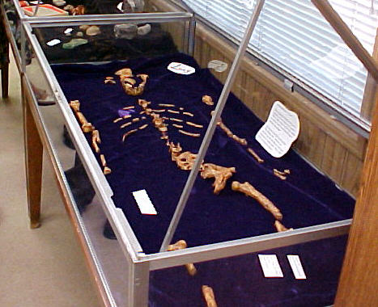

| Evolution in the News - February 2009 |
| by Do-While Jones |
Interest in evolution is waning.
After six years of steadily increasing traffic at our web site (from 3,000 to 30,000 visits per year), we've noticed that traffic has remained constant for the last four years. Membership and contributions were both down about 10% in 2008. Since we don't track hate mail quantitatively we don't have any numbers; but we guess our hate mail is down about 90%! Apathy about evolution has been apparent at the last several Community Dinners. But we aren't the only ones who have been affected.
Perhaps the most famous alleged human ancestor is an Australopithecus afarensis popularly known as "Lucy."
|
Lucy is a 3.2 million-year-old fossilized partial skeleton of a species with chimplike features that walked upright. The discovery in 1974 in Ethiopia forced a major revision of theories about the evolution of Homo sapiens. 1 |
Lucy's bones are usually kept safely in Ethiopia, not on public display. Only certain paleontologists have been allowed to study them. Exact replicas can be seen in museums all over the world, including this one in Ridgecrest, at the Biblical Archeology and Anthropology Museum (BAAM). 2

Some museum officials thought that interest in evolution was so high that people would flock to see Lucy. They were wrong.
|
Who loves Lucy? Far fewer people than a Seattle science center hoped when officials paid millions to show the fossil remains of one of the earliest known human ancestors. Halfway through the five-month exhibit, the Pacific Science Center faces a half-million-dollar loss resulting in layoffs of 8 percent of the staff, furloughs and a wage freeze, President Bryce Seidl said Friday. 3 |
Other museum officials who planned to show Lucy are changing their minds.
|
The Field Museum in Chicago withdrew from the tour because of the cost. Debate over whether the irreplaceable fossil should be shipped around the globe led the Denver Museum of Nature & Science to drop the idea after early consideration. "Lucy may not be anywhere other than Ethiopia after Seattle," Seidl said. 4 |
Despite these facts, at least one famous evolutionist remains delusional.
|
But Donald Johanson, the American anthropologist who discovered Lucy, said fascination with the skeleton remained strong. 5 |
We didn't read any stories about museums losing money when they paid Egypt a pharaoh's ransom to show King Tut's artifacts. Lots of people (including me) went to the Pacific Science Center to see the Titanic artifacts. Attendance figures (and the resulting income) represent reality. How people spend their money is a better indication of what people believe than mere words. People aren't fascinated by the evolution myth any more. That's why they didn't go.
| Quick links to | |||
|---|---|---|---|
| Science Against Evolution Home Page |
Back issues of Disclosure (our newsletter) |
Web Site of the Month |
Topical Index |
Footnotes:
1
http://news.yahoo.com/s/ap/20090125/ap_on_sc/who_loves_lucy_2, 24 January 2009, "Seattle shows little love for Lucy fossil exhibit"
2
http://www.baamonline.org/
3
http://news.yahoo.com/s/ap/20090125/ap_on_sc/who_loves_lucy_2, 24 January 2009, "Seattle shows little love for Lucy fossil exhibit"
4
ibid.
5
ibid.